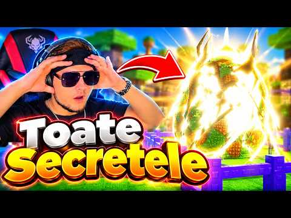

🔥 Toate secretele din Steal An Egg într-un singur clip

În clipul lung ai 5 secrete din Steal An Egg, pas cu pas:
- oul secret
- portalul din copac
- calea spre fuziune
- portalul secret
- Enchantment pentru mutație
Clipul: https://www.youtube.com/watch?v=DhR3YynkCNo
Short-ul cu misiunile secrete (14K+ vizualizări): https://www.youtube.com/shorts/eo3XMGl1mAI
Înainte de vânătoare, vezi și antrenamentul pentru ouăle secrete: https://pyromanc3r777.github.io/vexu-hq/posts/antrenament-pentru-ouale-secrete.html
Follow pe TikTok @vexu_online + Subscribe pe YouTube la VEXU Online. Follow = Au ce bile! 💥